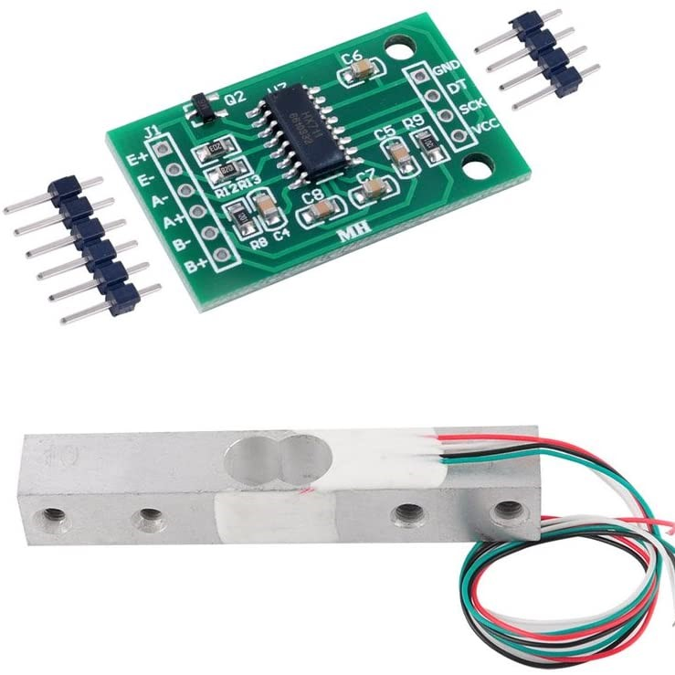

Rocket Test Stand
Custom built rocket thrust test stand for homemade rocket motor testing.

This rocket test stand is built for conducting thrust tests on homemade rocket motors. This design is currently still a work in progress
due to the fact that the picture in the project showcase was the last one taken before the stand was destroyed, along with the data. While
the test stand worked perfectly, albeit lacking aesthetics, all of the data from the half dozen motors tests was lost after the SD card logging the
data turned into fragments strewn across the lawn. After lessons learned from the first motor test stand, I have purchased all the required parts
for a version two design. The latest design features logging thrust data from a 10-kilogram strain gauge, where the data is read by a microcontroller.
Most of the changes between the original design pictured and the new design centeres around a bigger load cell to capture higher peak thrusts in rocket motors
as well as a redundant real time telemetry system streaming straight to a computer so that even if the motor catastrophically fails, all data collected up until
failure is still logged. Other changes include adding a key for a more secure launch circuit as well as a much longer cable. I also will move all the electronics
below the test stand with a blast shield over it so that no electronics will hopefully be harmed this time around.
Load Cell & Amplifier
 This is the load cell in a Wheatstone bridge configuration is used to measure force applied whatever it is attached to. Load cells come in all shapes and sizes, with different accuracies and weight ratings. For most hobby purposes, the higher the weight rating, the less accurate it will be, especially when trying to measure small forces. So, it is important to purchase the right load cell for the project. In my case, a 10-kilogram load cell was used, as most commercial rocket engines don't exceed 20 newtons, or 2 kilograms of thrust. The leads of the load cell are connected to an HX711 load cell amplifier to actually get measurable data from the load cell, which would otherwise just be small voltages due to changes in resistances. Most purchasable load cells come with the HX711 amplifier as it is a perfect pairing for hobby microcontrollers and reading data. Before I started the project, I was able to research how others had utilized this load cell amplifier configuration. I found that while in its stock configuration it was slow, it could be modified to increase the data throughput of the load cell. Most HX711 amplifiers ship with a stock refresh rate of 10Hz, or 10 times a second. This is a problem when trying to gather meaningful data out of a rocket motor as burn times can happen in as little as 1 second. In an effort to get meaningful data such as the thrust curve, and to calculate other metrics such as specifc impulse, the board was modified by resoldering a new jumper on the HX711 in order to allow operation at 80Hz.
Stand
The first iteration of the stand was constructed out of a scrap piece of plywood and some machined aluminum bushings to for load cell mounting. The bushings were turned from aluminum bar stock to 5 millimeters in length. The actual top of the load cell plate was made from a flat piece of PVC sheet stock with holes drilled to accommodate the motor mounting bracket. This bracket consists of two machined ends that fit over the rocket casing. The whole assembly is sandwiched together using four sets of threaded rod and nuts to securely fasten the rocket motor in the vertical axis for accurate and repeatable thrust measurements. In the version two design parts from this version will be salvaged and reused as this part of the test stand was robust enough for any potential failure of the test platform. As stated previously however, the base plate that hold the load cell and motor fixture will be raised up to accommodate the electronics housing so that they remain safer in any sort of mishap from the test stand.